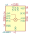
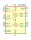
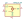
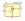

| Symbol |
Description |
AD831AP | Description: Doubly Balanced monolithic Mixer, 500 MHz BW, +24 dBm, IP3, LNA and LO driver, PLCC-20
Keys: mixer rf
Datasheet: https://www.analog.com/media/en/technical-documentation/data-sheets/AD831.pdf |
ADE-6 | Description: Mixer, +7 dBm LO, 0.05 to 250 MHz, CD542
Keys: mixer rf
Datasheet: https://www.minicircuits.com/pdfs/ADE-6.pdf |
ADEX-10 | Description: Mixer, +7 dBm LO, 10 to 1000 MHz, CD542
Keys: mixer rf
Datasheet: https://www.minicircuits.com/pdfs/ADEX-10.pdf |

ADL5801 | Description: 10 MHz to 6 GHz Active Mixer, LFCSP-24
Keys: mixer active
Datasheet: https://www.analog.com/media/en/technical-documentation/data-sheets/ADL5801.pdf |

ADL5802 | Description: 100 MHz to 6 GHz Dual Channel Active Mixer, LFCSP-24
Keys: mixer rf
Datasheet: https://www.analog.com/media/en/technical-documentation/data-sheets/ADL5802.pdf |

HMC213A | Description: 1.5-4.5GHz double-balanced mixer, MS8
Keys: mixer active
Datasheet: https://www.analog.com/media/en/technical-documentation/data-sheets/hmc213a.pdf |

HMC213B | Description: 1.5-4.5GHz double-balanced mixer, MS8
Keys: mixer active
Datasheet: https://www.analog.com/media/en/technical-documentation/data-sheets/hmc213B.pdf |
LT5560 | Description: 0.01MHz to 4GHz Low Power Active Mixer, DFN-8
Keys: rf mixer
Datasheet: https://www.analog.com/media/en/technical-documentation/data-sheets/5560f.pdf |